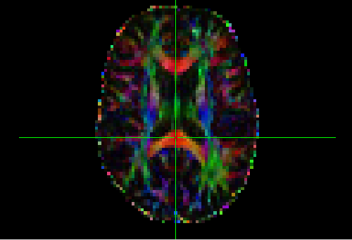

name: inverse-centre layout: true class: center, middle, inverse --- # Diffusion Weighted Imaging Analysis --- ## Outline ### Background and Sequences ### Pre-processing steps ### Analysis Tools/Methods --- layout: true name: columns class: inverse .left-column[ ### Background ] .right-column[ Diffusion Weighted Imaging sequences are a process where by acquiring many different images with different gradients we can get a measure of the amount of diffusivity across the brain. We can then fit a tensor (diffusion ellipsoid) that sums up all the information from each gradient at each voxel. ] --- .left-column[ ### Background ### Sequences ] .right-column[ Varying sequence components for diffusion can consist of: * the number of directions * whether a reverse phase encoded sequence is run * the number of b0 measurements/repeat measurements * whether the sequence was multi-shell ] --- .left-column[ ### Background ### Sequences ### Sequence Setup ] .right-column[ A good heuristic is to acquire opposite phase encoded directions to help correct for eddy currents, distortions. At least 40 directions should be acquired for b-values over 1000. Then time constraints/patient comfort and other factors will determine the number of directions, repeated measures and other factors. A sample sequence might look something like: 1 P>A b0 as a separate sequence, and then a second sequence with A>P2 sets of b3000 measurements interspersed with b0 measurements.emphatic[*] .footnote[.emphatic[*] This would give multiple measures at each gradient direction to help correct for any movement, and an opposite direction to correct for eddy current distortions] ] --- .left-column[ ### Background ### Sequences ### Sequence Setup ### Sources of Noise ] .right-column[ Certain things to look out for when acquiring data: * Eddy current distortions * Movement can have a particularly large impact * Other traditional MR artifact sources also affect quality. ] --- template: inverse-centre ## First steps with the data --- template: columns .left-column[ ## Pre-processing Steps ### Conversion ] .right-column[ First step after receiving the DICOM files from the scanner is to convert them to a format that is recognised by the software you intend to use for the rest of your analysis steps. There are many conversion tools out there. A lot of analysis packages contain a conversion tool, or you can use a standalone tool. The most widely used format, particularly for open source or freely available software is the nifti file format. The freely available `dcm2niix` package is one popular choice for conversion. ] --- .left-column[ ## Pre-processing Steps ### Conversion ### Movement/Distortion correction ] .right-column[ Most analysis toolchains for diffusion data will have some method for correcting for subject movement and eddy current distortions, and perhaps susceptibility distortions as well. NOTE: In some instances it may be necessary to manually rotate the original bvecs (gradient vector information) after distortion/motion correction. With FSL current versions recommend a combination of the `eddy` and `topup` tools. ] --- .left-column[ ##Pre-processing Steps ### Conversion ### Movement/Distortion correction ### Diffusion Tensor Fitting ] .right-column[ This is another steps that most of the analysis packages have an implementation of. It is this step that generates Fractional Anisotropy maps, Mean Diffusivity maps and more. FSL has a processing step called `dtifit` that takes the eddy current corrected data, a whole brain mask, usually generated with it's brain extraction tool `bet` which strips the skull and external data from a b0 image, and then outputs a range of files, including those mentioned above. .center[] .footnote[A sample FA map, coloured based on the direction of diffusion] ] --- ### ProbtrackX tract representation in 3D .center[ <video width="500" height="500" controls> <source src="resources/animation.mp4" type="video/mp4"> <source src="resources/animation.ogg" type="video/ogg"> Your browser does not support the video tag. </video> ] .footnote[The display threshold has been adjusted to clarify the representation] --- There are mulitple ways to generate masks used for tractography, including: * Use masks from a predefined/default atlas. Fast. Lacks precision. * Use masks from a structural analysis of our participants (Freesurfer or similar) * Use masks from another group that have scanned regions of interest in higher field strengths, ie 7T --- # Final Thoughts 1. Normalisation for comparing between subjects 2. Thresholding for throwing away values with low probability of being on tract. .center[<img src="resources/tbss_results_filled.png" width="500" height="335">]